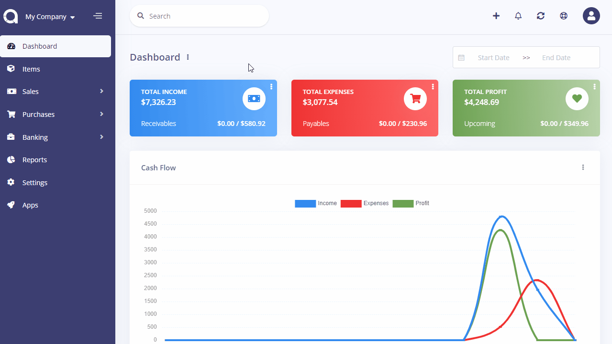
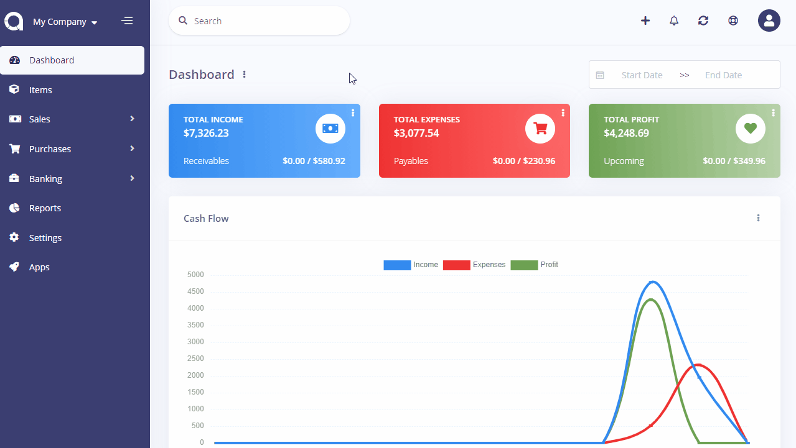

Reconciliations
Bank reconciliation is a process performed to ensure that your company's income and expense records are correct and that the bank's records are also correct.
Reconciled income/expense transactions get protected so they can't be deleted.
Reconciliations page is located under Banking > Reconciliations menu. On this page you can see all reconciliations, search for any, create a new one, edit the current ones and delete them.
The following fields are displayed:
- Created Date: The date reconciliation is performed.
- Account: The bank account name that the reconciliation is performed for.
- Period: The start and end date of the reconciliation.
- Closing Balance: The reconciled balance.
- Status: Status of the reconciliation.
- Actions: You can use this button to edit, and delete the reconciliation.

New Reconciliation
The following fields are displayed as blank to be filled, some are required and some not. Those marked with red star are required.
- Start Date: Select the start date of the period you would like to reconcile.
- End Date: Select the end date of the period you would like to reconcile.
- Closing Balance: Enter the closing balance that is in accordance with your physical bank account.
- Account: The bank account name that the reconciliation will be performed for.
- Transactions: The list of the transactions (income/expense) that will be reconciled.
- Date: The date of the transaction.
- Description: The description of the transaction.
- Contact: The Customer or vendor.
- Deposit: The amount if the transaction is an income record.
- Withdrawal: The amount if the transaction is an expense record.
- Clear: Option to reconcile the transaction or not.
- Closing Balance: The of balance of your physical bank account.
- Cleared Amount: The of amount of the cleared transactions.
- Difference: You need to make sure that the Closing Balance and Cleared Amount are in sync and the Difference shows 0.
You may save the reconciliation and continue later or finish it by clicking reconcile button.
